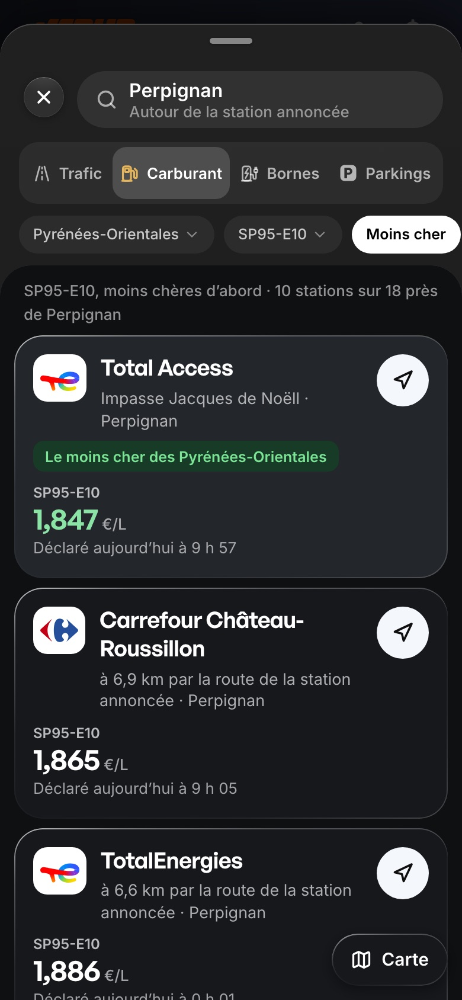
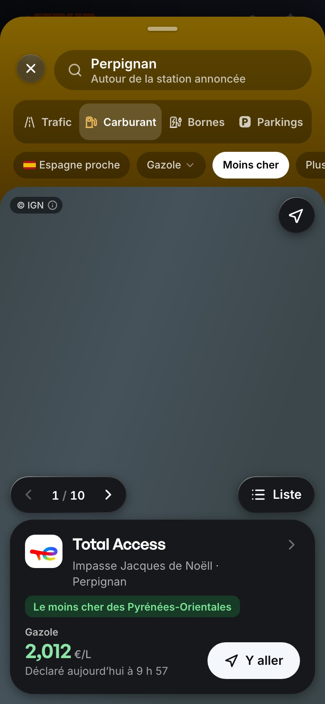
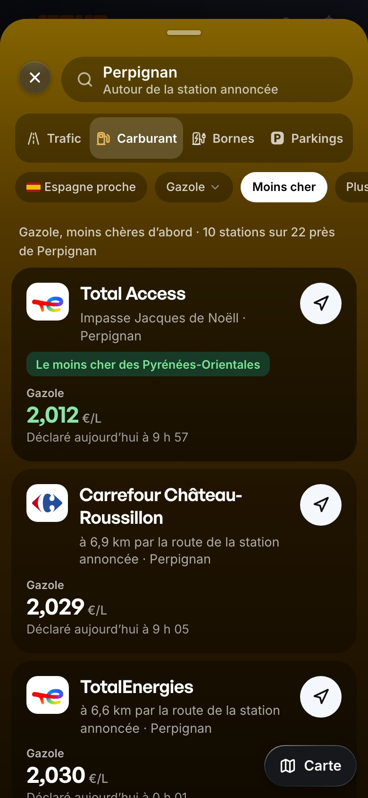
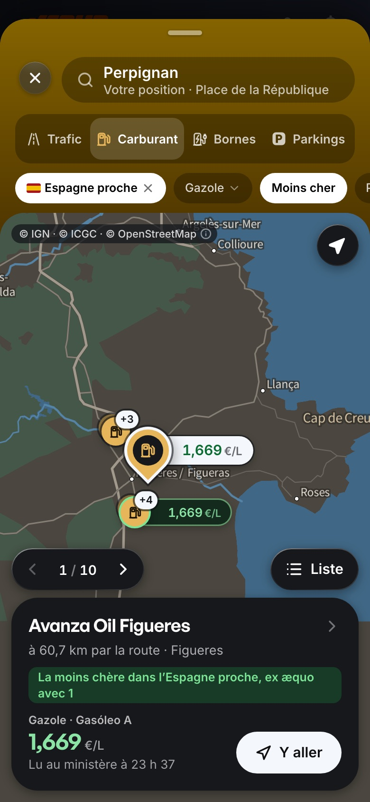
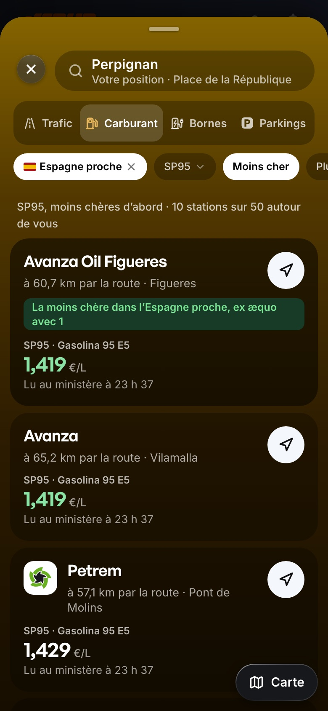
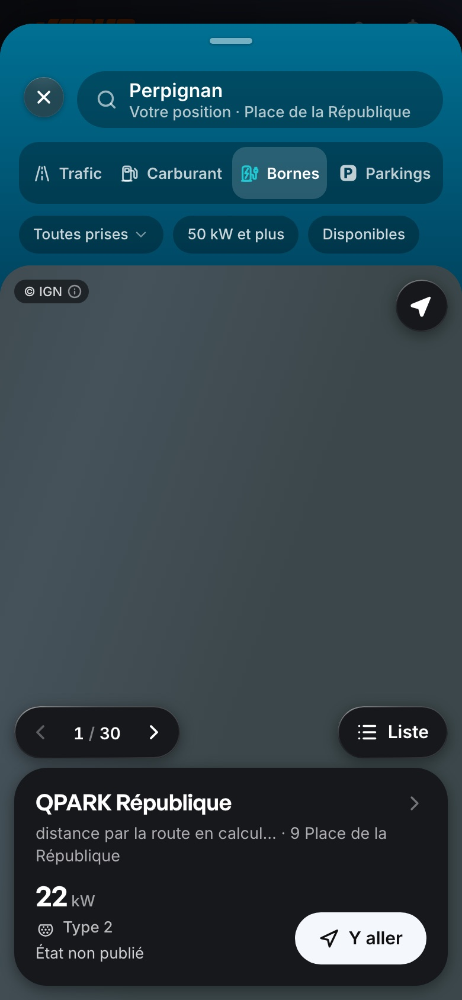
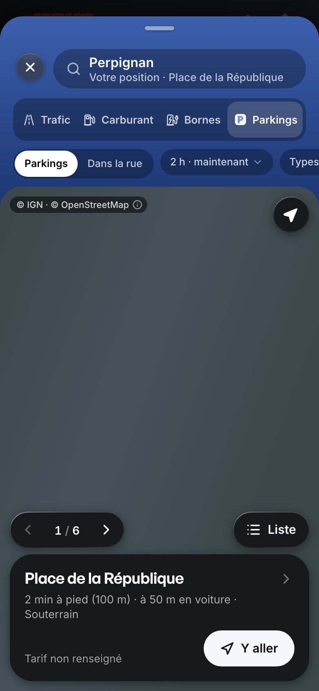
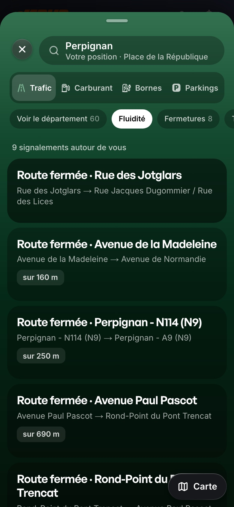
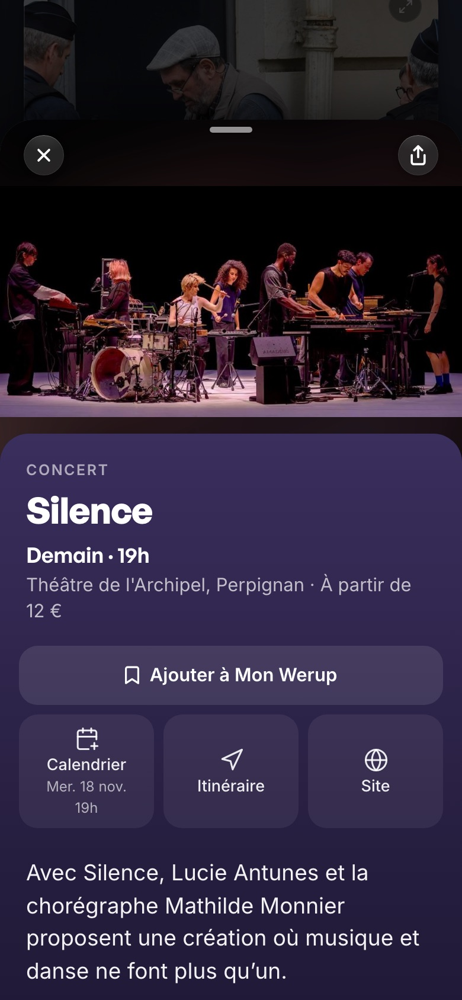

Les feuilles en couleur
Captures de werup.app en production, sur iPhone, le 17/11 vers minuit.
Avant : la listeDes cartes à bord 3D sur du noir uni.
Carburant, en jaune doréLa couleur de l'onglet sur toute la feuille ; le gazole par défaut.
La liste, sans bord 3DDes aplats sombres posés sur la couleur.
Espagne proche, en un toucherUn seul bouton : la moins chère d'abord, la carte d'Argelès à Figueres.
En SP95-E10, l'Espagne passe seule au SP95Elle ne vend pas d'E10 ; revenu en France, l'E10 revient.
Bornes, en bleu électriqueChaque onglet prend la couleur de son repère sur la carte.
Parkings, au bleu du « P »Distinct des bornes.
Trafic, en vert saugeLa liste des signalements, sans bord 3D.
La fiche d'une sortieSa page prend la couleur de son affiche.